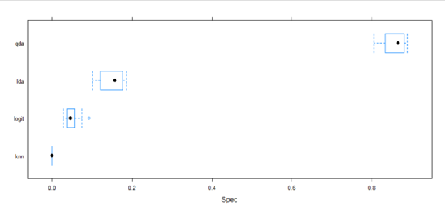
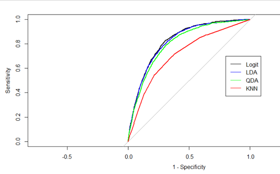

Results and Performance
First, we will look at the outputs of our training models.
From these models we will pick the best performer to move forward with the testing data.
Logistic Regression
Looking at some general statistics from Figure 2A we see that there is an extremely high false
positive rate. Given the model also achieves a 91.41% accuracy on prediction this indicates that we
need to tune the threshold for guessing “Yes/No”.
Figure 2A - Logistic Regression Confusion Matrix
Figure 2B gives us an ROC score for the logistic regression model of 82.41.
This statistic will be used later as a performance comparison between different models we test.

Figure 2B - Logistic Regression Model Results
K Nearest Neighbor
The confusion matrix for the KNN model was very close in accuracy performance to
the Logistic Regression model. Here we see a 91.38% accuracy score in predicting Heart Disease.
Like the model above, we may need to tune the threshold and or balance the data.
Figure 3A - KNN Confusion Matrix
Here we get the ROC score for different neighborhoods. From this output we see that when K=23
we get an ROC score of 71.47. This will be used for later comparison against other models.
Figure 3B - KNN Results
From Figure 3C we can see that we should have approximately 11 neighbors.
The deduction for this number is due to the elbow at 11. If we include too many neighbors, we may overfit our data.
Figure 3C - KNN Perf. with Different Neighborhoods
Linear Discriminant Analysis
The confusion matrix for the LDA model has high accuracy performance but lower than the previous two models.
Here we see a 90.7% accuracy score in predicting heart disease. Although it is better at not
defaulting to false positives, threshold adjustment may be necessary.
Figure 4A - LDA Confusion Matrix
Our LDA model had an ROC score of 81.86 which will be used for comparison against other models.
Figure 4B - LDA Results
Quadratic Discriminant Analysis
Our QDA model gave us an ROC score of 80.38 which again will be used for comparison later against
competing models.
Figure 5 - QDA Results
Simple Decision Tree
The Simple Decision Tree reflects 29 splits across the 18 variables. A +99% specificity rate and small
sensitivity rate reflects the imbalanced classes found in the dataset. The 58.42% positive prediction
rate and 75% AUC implies the decision tree can accurately predict heart disease significantly above a coin flip.

Figure 6A - Decision Tree Results
Figure 6B - Decision Tree Sensitivity and Specificity
Figure 6C - Decision Tree
Comparing Models

Figure 7A - ROC Performance of Models
Figure 7B - Sensitivity Performance of Models
Figure 7C - Specificity Performance of Models
Figure 7D - ROC Curve Performance of Models
Looking at 7A-C we can get a breakdown of each model's ROC, Sensitivity, and Specificity.
Figure 7A shows us that the Logit model has the best performance with LDA performing marginally worse.
Also considering Figure 7B and 7C, we see that Logit has the tightest bounds. Given this information
we also want to see a graphical representation of these statistics. Figure 7D gives us a breakdown of the
ROC curve clearly showing Logit and LDA are very close, QDA performing slightly worse than LDA, and KNN
performing much worse than the rest of the models. Given this information we will proceed with the Logistic
Regression Model for the test set.
Test Output
Now that we know what model we will be using, further tuning can be performed. Here we recalculate the threshold
for our model to predict heart disease. With this recalculation we see that accuracy dropped from 91.4% to 73.5%.
However, we became much better at predicting the negative class as well.
Figure 8A - Logistic Regression Model with Recalculated Threshold
The Confusion Matrix on the test set was very similar in terms of accuracy to the train set. This was surprising
as training indicators are not a guarantee that the test set will perform well. From the test set we got a 73.8%
accuracy on predicting whether someone has heart disease. Our train set got 73.5% accuracy.
Figure 8B - Test Confusion Matrix
Figure 8C - Test and Train Performance
Figure 8C plots the Training ROC against the Test ROC curve, we can see both are extremely close with the
test set having slightly more variation. To clearly state which one is the better performer, the AUC was
calculated (0.8248 for test, 0.8241 for train). From this we conclude that the test set performs .0007 better than the training set.

{kind=link}
{kind=link}
{kind=link}
{kind=link}
{kind=link}
{kind=link}
{kind=link}
{kind=link}
{kind=link}
{kind=link}
{kind=link}
{kind=link}
{kind=link}
{kind=link}
{kind=link}
{kind=link}